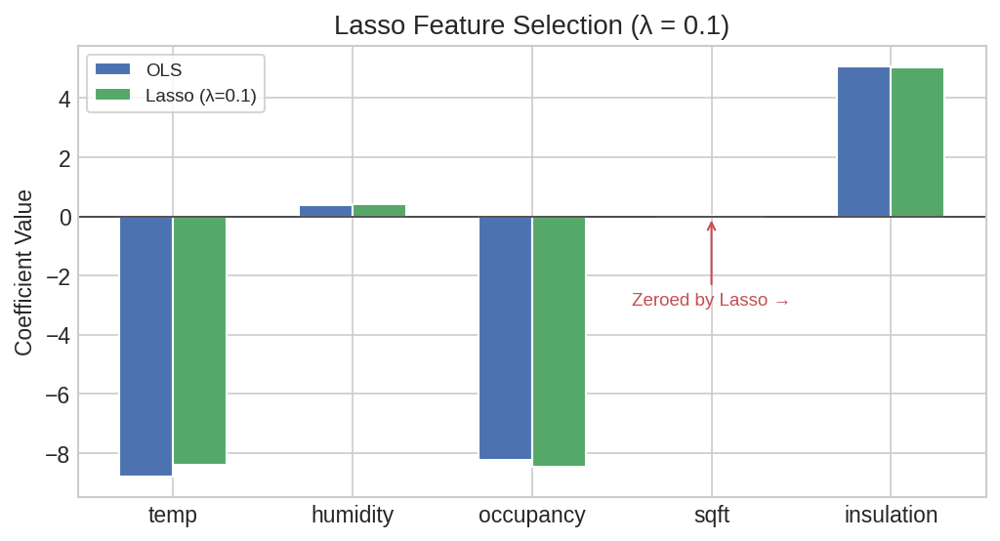
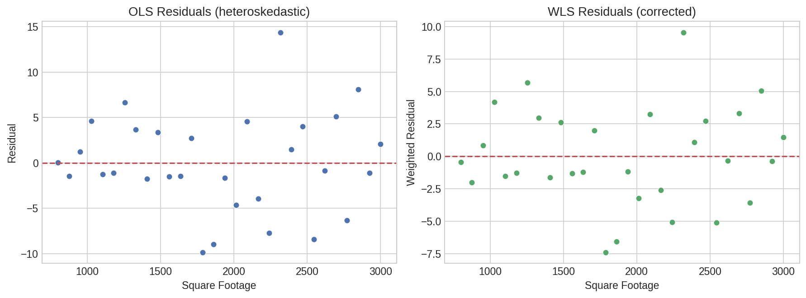
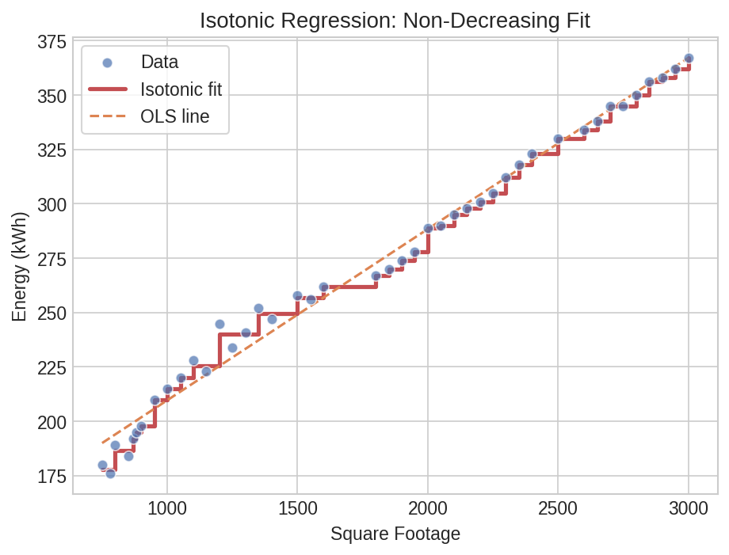

Regularized & Specialized Linear Models¶
Beyond ordinary least squares, real-world data often calls for regularized or constrained estimators. Correlated predictors inflate OLS coefficient variance, heteroskedastic errors violate constant-variance assumptions, and streaming data demands online updates. This page walks through Lasso, Ridge, Elastic Net, Weighted Least Squares, Recursive Least Squares, Bounded/Non-Negative regression, and Isotonic regression — all as native Polars expressions.
Setup¶
Energy consumption prediction for commercial buildings with correlated features (square footage, insulation rating, and temperature are all interrelated):
import polars as pl
import polars_statistics as ps
df = pl.DataFrame({
"kwh": [245, 312, 198, 367, 289, 401, 176, 334, 256, 423,
210, 345, 278, 389, 301, 412, 189, 356, 267, 434,
223, 323, 234, 378, 295, 398, 184, 345, 262, 445,
215, 330, 247, 385, 305, 420, 192, 362, 274, 440,
228, 318, 241, 372, 290, 405, 180, 350, 258, 430,
220, 338, 252, 392, 298, 415, 195, 358, 270, 442],
"temp": [32, 28, 35, 25, 30, 22, 38, 26, 33, 20,
36, 27, 31, 24, 29, 21, 37, 25, 32, 19,
34, 28, 35, 24, 30, 23, 38, 26, 33, 18,
36, 27, 34, 23, 29, 21, 37, 25, 31, 19,
33, 28, 35, 24, 30, 22, 39, 26, 33, 20,
34, 27, 34, 23, 29, 21, 37, 25, 32, 18],
"humidity": [45, 55, 40, 60, 50, 65, 35, 58, 42, 70,
38, 57, 48, 62, 52, 68, 36, 59, 44, 72,
43, 54, 39, 61, 49, 64, 34, 56, 41, 73,
37, 55, 46, 63, 51, 67, 35, 58, 43, 71,
44, 53, 40, 60, 50, 66, 33, 57, 42, 70,
42, 56, 47, 64, 52, 69, 36, 59, 44, 74],
"occupancy": [4, 3, 5, 2, 4, 2, 6, 3, 4, 1,
5, 3, 4, 2, 3, 1, 6, 2, 4, 1,
5, 3, 5, 2, 4, 2, 6, 3, 4, 1,
5, 3, 5, 2, 3, 1, 6, 2, 4, 1,
4, 3, 5, 2, 4, 2, 6, 3, 4, 1,
5, 3, 4, 2, 3, 1, 6, 2, 4, 1],
"sqft": [1200, 1800, 900, 2200, 1500, 2500, 800, 2000, 1300, 2800,
950, 2100, 1400, 2300, 1600, 2600, 850, 2100, 1350, 2900,
1100, 1900, 1000, 2200, 1500, 2400, 780, 2000, 1250, 3000,
1000, 1850, 1150, 2250, 1550, 2700, 870, 2150, 1400, 2850,
1150, 1800, 1050, 2150, 1500, 2500, 750, 2050, 1300, 2750,
1050, 1950, 1200, 2350, 1550, 2650, 880, 2100, 1350, 2950],
"insulation": [3, 5, 2, 7, 4, 8, 1, 6, 3, 9,
2, 6, 4, 7, 5, 8, 1, 6, 3, 9,
3, 5, 2, 7, 4, 8, 1, 6, 3, 10,
2, 5, 3, 7, 5, 9, 1, 6, 4, 9,
3, 5, 2, 7, 4, 8, 1, 6, 3, 9,
2, 5, 3, 7, 5, 8, 1, 6, 3, 10],
})
Cast to Float64 and add a weight column for Weighted Least Squares:
df = df.cast({c: pl.Float64 for c in df.columns})
# Weight column for WLS (inverse variance — larger units have more stable consumption)
df = df.with_columns(
(1.0 / (pl.col("sqft") / 1000.0)).alias("weight")
)
Lasso for Feature Selection¶
Lasso (L1 regularization) shrinks some coefficients exactly to zero, performing automatic feature selection. With correlated predictors like sqft and insulation, Lasso picks one and drops the other:
result = df.select(
ps.lasso("kwh", "temp", "humidity", "occupancy", "sqft", "insulation",
lambda_=0.1).alias("model")
)
model = result["model"][0]
print(f"R²: {model['r_squared']:.4f}")
print(f"RMSE: {model['rmse']:.2f}")
print(f"Intercept: {model['intercept']:.4f}")
print(f"Coefficients: {model['coefficients']}")
Expected output:
The sqft coefficient is zero -- Lasso eliminated it as redundant given the other predictors (especially insulation, which is highly correlated with building size).
Coefficient Table¶
lasso_coefs = (
df.select(
ps.lasso_summary("kwh", "temp", "humidity", "occupancy", "sqft", "insulation",
lambda_=0.1).alias("coef")
)
.explode("coef")
.unnest("coef")
)
print(lasso_coefs)
# ┌───────────┬───────────┬───────────┬───────────┬─────────┐
# │ term ┆ estimate ┆ std_error ┆ statistic ┆ p_value │
# ╞═══════════╪═══════════╪═══════════╪═══════════╪═════════╡
# │ intercept ┆ 502.5261 ┆ NaN ┆ NaN ┆ NaN │
# │ x1 ┆ -5.6110 ┆ NaN ┆ NaN ┆ NaN │
# │ x2 ┆ -0.1680 ┆ NaN ┆ NaN ┆ NaN │
# │ x3 ┆ -7.0765 ┆ NaN ┆ NaN ┆ NaN │
# │ x4 ┆ 0.0000 ┆ NaN ┆ NaN ┆ NaN │
# │ x5 ┆ 0.2145 ┆ NaN ┆ NaN ┆ NaN │
# └───────────┴───────────┴───────────┴───────────┴─────────┘
Standard errors and p-values are NaN for Lasso -- the L1 penalty makes the usual OLS standard errors invalid.
Predictions with Intervals¶
lasso_preds = (
df.with_columns(
ps.lasso_predict("kwh", "temp", "humidity", "occupancy", "sqft", "insulation",
lambda_=0.1, interval="prediction").alias("pred")
)
.unnest("pred")
)
print(lasso_preds.select("kwh", "lasso_prediction", "lasso_lower", "lasso_upper").head(5))
# ┌───────┬──────────────────┬─────────────┬─────────────┐
# │ kwh ┆ lasso_prediction ┆ lasso_lower ┆ lasso_upper │
# ╞═══════╪══════════════════╪═════════════╪═════════════╡
# │ 245.0 ┆ 287.75 ┆ 203.76 ┆ 371.75 │
# │ 312.0 ┆ 316.02 ┆ 233.93 ┆ 398.12 │
# │ 198.0 ┆ 264.47 ┆ 180.94 ┆ 348.00 │
# │ 367.0 ┆ 339.52 ┆ 256.36 ┆ 422.69 │
# │ 289.0 ┆ 298.35 ┆ 215.59 ┆ 381.11 │
# └───────┴──────────────────┴─────────────┴─────────────┘
Formula Syntax¶
lasso_f = df.select(
ps.lasso_formula("kwh ~ temp + humidity + occupancy + sqft + insulation",
lambda_=0.1).alias("model")
)
model_f = lasso_f["model"][0]
print(f"R² (formula): {model_f['r_squared']:.4f}")
# Formula summary and predict work the same way
lasso_f_coefs = (
df.select(
ps.lasso_formula_summary("kwh ~ temp + humidity + occupancy + sqft + insulation",
lambda_=0.1).alias("coef")
)
.explode("coef")
.unnest("coef")
)
lasso_f_preds = (
df.with_columns(
ps.lasso_formula_predict("kwh ~ temp + humidity + occupancy + sqft + insulation",
lambda_=0.1, interval="prediction").alias("pred")
)
.unnest("pred")
)
Expected output:

Plot code
import matplotlib.pyplot as plt
import numpy as np
terms = ["temp", "humidity", "occupancy", "sqft", "insulation"]
coefs = model["coefficients"]
fig, ax = plt.subplots(figsize=(7, 4))
colors = ["#4C72B0" if c != 0 else "#C44E52" for c in coefs]
y_pos = np.arange(len(terms))
ax.barh(y_pos, coefs, color=colors, height=0.5)
ax.set_yticks(y_pos)
ax.set_yticklabels(terms)
ax.axvline(0, color="#999", ls="--", lw=1)
ax.set_xlabel("Coefficient Value")
ax.set_title("Lasso Coefficients (red = shrunk to zero)")
ax.invert_yaxis()
plt.tight_layout()
plt.savefig("reg2_lasso_coefs.png", dpi=150)
Weighted Least Squares¶
When observation variance is not constant, WLS down-weights noisy observations. Here, larger buildings have more stable energy consumption, so we weight by inverse floor area:
result = df.select(
ps.wls("kwh", "weight", "temp", "humidity", "sqft").alias("model")
)
model = result["model"][0]
print(f"R²: {model['r_squared']:.4f}")
print(f"RMSE: {model['rmse']:.2f}")
print(f"Intercept: {model['intercept']:.4f}")
print(f"Coefficients: {model['coefficients']}")
Expected output:
Coefficient Table¶
wls_coefs = (
df.select(
ps.wls_summary("kwh", "weight", "temp", "humidity", "sqft").alias("coef")
)
.explode("coef")
.unnest("coef")
)
print(wls_coefs)
# ┌───────────┬───────────┬───────────┬───────────┬──────────┐
# │ term ┆ estimate ┆ std_error ┆ statistic ┆ p_value │
# ╞═══════════╪═══════════╪═══════════╪═══════════╪══════════╡
# │ intercept ┆ 413.7000 ┆ 95.41 ┆ 4.34 ┆ 0.000061 │
# │ x1 ┆ -7.0846 ┆ 1.90 ┆ -3.72 ┆ 0.000461 │
# │ x2 ┆ -0.2620 ┆ 0.77 ┆ -0.34 ┆ 0.735667 │
# │ x3 ┆ 0.0649 ┆ 0.01 ┆ 4.57 ┆ 0.000027 │
# └───────────┴───────────┴───────────┴───────────┴──────────┘
Temperature and square footage are highly significant; humidity is not (p = 0.74).
Predictions¶
wls_preds = (
df.with_columns(
ps.wls_predict("kwh", "weight", "temp", "humidity", "sqft",
interval="prediction").alias("pred")
)
.unnest("pred")
)
print(wls_preds.select("kwh", "wls_prediction", "wls_lower", "wls_upper").head(5))
# ┌───────┬────────────────┬───────────┬───────────┐
# │ kwh ┆ wls_prediction ┆ wls_lower ┆ wls_upper │
# ╞═══════╪════════════════╪═══════════╪═══════════╡
# │ 245.0 ┆ 253.05 ┆ 238.17 ┆ 267.94 │
# │ 312.0 ┆ 317.70 ┆ 303.34 ┆ 332.05 │
# │ 198.0 ┆ 213.65 ┆ 198.85 ┆ 228.44 │
# │ 367.0 ┆ 363.59 ┆ 349.14 ┆ 378.04 │
# │ 289.0 ┆ 285.38 ┆ 271.00 ┆ 299.75 │
# └───────┴────────────────┴───────────┴───────────┘
Formula Syntax¶
wls_f = df.select(
ps.wls_formula("kwh ~ temp + humidity + sqft", weights="weight").alias("model")
)
model_f = wls_f["model"][0]
print(f"R² (formula): {model_f['r_squared']:.4f}")
Expected output:

Plot code
import matplotlib.pyplot as plt
residuals = wls_preds["kwh"] - wls_preds["wls_prediction"]
fig, ax = plt.subplots(figsize=(6, 4.5))
ax.scatter(wls_preds["wls_prediction"], residuals,
s=50, color="#4C72B0", edgecolor="white")
ax.axhline(0, color="#C44E52", ls="--", lw=1.5)
ax.set_xlabel("WLS Fitted Values")
ax.set_ylabel("Residuals")
ax.set_title("WLS Residuals vs Fitted")
plt.tight_layout()
plt.savefig("reg2_wls_residuals.png", dpi=150)
Recursive Least Squares¶
RLS updates coefficients one observation at a time, useful for streaming data or detecting parameter drift. The forgetting_factor (0 < ff <= 1) controls how quickly old observations are down-weighted:
result = df.select(
ps.rls("kwh", "temp", "sqft", forgetting_factor=0.98).alias("model")
)
model = result["model"][0]
print(f"R²: {model['r_squared']:.4f}")
print(f"RMSE: {model['rmse']:.2f}")
print(f"Intercept: {model['intercept']:.4f}")
print(f"Coefficients: {model['coefficients']}")
Expected output:
Coefficient Table¶
rls_coefs = (
df.select(
ps.rls_summary("kwh", "temp", "sqft", forgetting_factor=0.98).alias("coef")
)
.explode("coef")
.unnest("coef")
)
print(rls_coefs)
# ┌───────────┬───────────┬───────────┬───────────┬─────────┐
# │ term ┆ estimate ┆ std_error ┆ statistic ┆ p_value │
# ╞═══════════╪═══════════╪═══════════╪═══════════╪═════════╡
# │ intercept ┆ 439.6408 ┆ NaN ┆ NaN ┆ NaN │
# │ x1 ┆ -7.6797 ┆ NaN ┆ NaN ┆ NaN │
# │ x2 ┆ 0.0521 ┆ NaN ┆ NaN ┆ NaN │
# └───────────┴───────────┴───────────┴───────────┴─────────┘
Standard errors are NaN for RLS because the recursive estimator does not produce the usual OLS variance-covariance matrix.
Predictions¶
rls_preds = (
df.with_columns(
ps.rls_predict("kwh", "temp", "sqft", forgetting_factor=0.98).alias("pred")
)
.unnest("pred")
)
print(rls_preds.select("kwh", "rls_prediction").head(5))
# ┌───────┬────────────────┐
# │ kwh ┆ rls_prediction │
# ╞═══════╪════════════════╡
# │ 245.0 ┆ 256.45 │
# │ 312.0 ┆ 318.44 │
# │ 198.0 ┆ 217.77 │
# │ 367.0 ┆ 362.33 │
# │ 289.0 ┆ 287.44 │
# └───────┴────────────────┘
Formula Syntax¶
rls_f = df.select(
ps.rls_formula("kwh ~ temp + sqft", forgetting_factor=0.98).alias("model")
)
model_f = rls_f["model"][0]
print(f"R² (formula): {model_f['r_squared']:.4f}")
Expected output:
Expanding OLS¶
When forgetting_factor=1.0, RLS is equivalent to expanding-window OLS -- all past observations are weighted equally. The expanding_ols function is a convenient shorthand:
result = df.select(
ps.expanding_ols("kwh", "temp", "sqft").alias("model")
)
model = result["model"][0]
print(f"R² (expanding): {model['r_squared']:.4f}")
Expected output:
Bounded & Non-Negative Regression¶
Bounded Least Squares¶
BLS constrains coefficients to lie within a specified range. This is useful when domain knowledge dictates that effects must be bounded:
result = df.select(
ps.bls("kwh", "temp", "sqft",
lower_bound=-10.0, upper_bound=1.0).alias("model")
)
model = result["model"][0]
print(f"R²: {model['r_squared']:.4f}")
print(f"RMSE: {model['rmse']:.2f}")
print(f"Intercept: {model['intercept']:.4f}")
print(f"Coefficients: {model['coefficients']}")
Expected output:
The intercept and temperature coefficient hit the bounds, showing the constraint is active.
bls_coefs = (
df.select(
ps.bls_summary("kwh", "temp", "sqft",
lower_bound=-10.0, upper_bound=1.0).alias("coef")
)
.explode("coef")
.unnest("coef")
)
bls_preds = (
df.with_columns(
ps.bls_predict("kwh", "temp", "sqft",
lower_bound=-10.0, upper_bound=1.0).alias("pred")
)
.unnest("pred")
)
print(bls_preds.select("kwh", "bls_prediction").head(5))
# ┌───────┬────────────────┐
# │ kwh ┆ bls_prediction │
# ╞═══════╪════════════════╡
# │ 245.0 ┆ 237.0 │
# │ 312.0 ┆ 335.5 │
# │ 198.0 ┆ 188.7 │
# │ 367.0 ┆ 400.8 │
# │ 289.0 ┆ 286.2 │
# └───────┴────────────────┘
Formula Syntax¶
bls_f = df.select(
ps.bls_formula("kwh ~ temp + sqft",
lower_bound=-10.0, upper_bound=1.0).alias("model")
)
Non-Negative Least Squares¶
NNLS constrains all coefficients to be non-negative (equivalent to bls with lower_bound=0). This makes sense when you know all predictor effects should be positive:
result = df.select(
ps.nnls("kwh", "sqft", "insulation").alias("model")
)
model = result["model"][0]
print(f"R²: {model['r_squared']:.4f}")
print(f"Coefficients: {model['coefficients']}")
Expected output:
Non-negative constraint conflict
R² = 0 indicates the non-negative constraint is too restrictive here. The dominant predictor (temperature) has a negative relationship with energy consumption (colder weather increases heating demand), but NNLS forces all coefficients non-negative. Use NNLS only when the positive-coefficient assumption is valid for your features.
nnls_preds = (
df.with_columns(
ps.nnls_predict("kwh", "sqft", "insulation").alias("pred")
)
.unnest("pred")
)
nnls_f = df.select(
ps.nnls_formula("kwh ~ sqft + insulation").alias("model")
)
Isotonic Regression¶
Isotonic regression fits a monotone (non-decreasing or non-increasing) step function. It is non-parametric and makes no assumptions about functional form -- only that the relationship is monotonic:
result = df.select(
ps.isotonic("kwh", "sqft").alias("model")
)
model = result["model"][0]
print(f"R²: {model['r_squared']:.4f}")
print(f"Increasing: {model['increasing']}")
print(f"First 5 fitted: {model['fitted'][:5]}")
Expected output:
The near-perfect R² reflects isotonic regression's flexibility -- it can fit any monotone pattern in the data.

Plot code
import matplotlib.pyplot as plt
import numpy as np
sqft = df["sqft"].to_numpy()
kwh = df["kwh"].to_numpy()
fitted = model["fitted"]
order = np.argsort(sqft)
fig, ax = plt.subplots(figsize=(7, 5))
ax.scatter(sqft, kwh, s=40, color="#4C72B0", edgecolor="white",
alpha=0.7, label="Observed")
ax.step(sqft[order], [fitted[i] for i in order],
where="post", color="#C44E52", lw=2, label="Isotonic fit")
ax.set_xlabel("Square Footage")
ax.set_ylabel("Energy Consumption (kWh)")
ax.legend()
plt.tight_layout()
plt.savefig("reg2_isotonic_fit.png", dpi=150)
Ridge & Elastic Net Variants¶
Ridge Regression¶
Ridge (L2 regularization) shrinks coefficients toward zero without setting any exactly to zero. It handles multicollinearity well and always retains all predictors:
result = df.select(
ps.ridge("kwh", "temp", "humidity", "occupancy", "sqft", "insulation",
lambda_=5.0).alias("model")
)
model = result["model"][0]
print(f"R²: {model['r_squared']:.4f}")
print(f"RMSE: {model['rmse']:.2f}")
print(f"Intercept: {model['intercept']:.4f}")
print(f"Coefficients: {model['coefficients']}")
Expected output:
Coefficient Table¶
ridge_coefs = (
df.select(
ps.ridge_summary("kwh", "temp", "humidity", "occupancy", "sqft", "insulation",
lambda_=5.0).alias("coef")
)
.explode("coef")
.unnest("coef")
)
print(ridge_coefs)
# ┌───────────┬───────────┬───────────┬───────────┬───────────┐
# │ term ┆ estimate ┆ std_error ┆ statistic ┆ p_value │
# ╞═══════════╪═══════════╪═══════════╪═══════════╪═══════════╡
# │ intercept ┆ 356.5200 ┆ 1.03 ┆ 345.50 ┆ 0.0 │
# │ x1 ┆ -5.0626 ┆ 0.54 ┆ -9.44 ┆ 0.000000 │
# │ x2 ┆ 0.0373 ┆ 0.57 ┆ 0.07 ┆ 0.948000 │
# │ x3 ┆ -4.5530 ┆ 2.39 ┆ -1.90 ┆ 0.062000 │
# │ x4 ┆ 0.0621 ┆ 0.01 ┆ 4.89 ┆ 0.000010 │
# │ x5 ┆ 0.7414 ┆ 2.45 ┆ 0.30 ┆ 0.763000 │
# └───────────┴───────────┴───────────┴───────────┴───────────┘
Unlike Lasso, Ridge provides valid standard errors and p-values. Temperature (x1) and square footage (x4) are significant; humidity (x2) and insulation (x5) are not.
Predictions¶
ridge_preds = (
df.with_columns(
ps.ridge_predict("kwh", "temp", "humidity", "occupancy", "sqft", "insulation",
lambda_=5.0, interval="prediction").alias("pred")
)
.unnest("pred")
)
print(ridge_preds.select("kwh", "ridge_prediction").head(5))
# ┌───────┬──────────────────┐
# │ kwh ┆ ridge_prediction │
# ╞═══════╪══════════════════╡
# │ 245.0 ┆ 254.68 │
# │ 312.0 ┆ 318.57 │
# │ 198.0 ┆ 215.39 │
# │ 367.0 ┆ 364.80 │
# │ 289.0 ┆ 284.35 │
# └───────┴──────────────────┘
Formula Syntax¶
ridge_f = df.select(
ps.ridge_formula("kwh ~ temp + humidity + occupancy + sqft + insulation",
lambda_=5.0).alias("model")
)
ridge_f_coefs = (
df.select(
ps.ridge_formula_summary("kwh ~ temp + humidity + occupancy + sqft + insulation",
lambda_=5.0).alias("coef")
)
.explode("coef")
.unnest("coef")
)
ridge_f_preds = (
df.with_columns(
ps.ridge_formula_predict("kwh ~ temp + humidity + occupancy + sqft + insulation",
lambda_=5.0, interval="prediction").alias("pred")
)
.unnest("pred")
)
Elastic Net¶
Elastic Net combines L1 (Lasso) and L2 (Ridge) penalties. The alpha parameter controls the mix: alpha=1 is pure Lasso, alpha=0 is pure Ridge:
result = df.select(
ps.elastic_net("kwh", "temp", "humidity", "occupancy", "sqft", "insulation",
lambda_=1.0, alpha=0.5).alias("model")
)
model = result["model"][0]
print(f"R²: {model['r_squared']:.4f}")
print(f"RMSE: {model['rmse']:.2f}")
print(f"Intercept: {model['intercept']:.4f}")
print(f"Coefficients: {model['coefficients']}")
Expected output:
Elastic Net zeroed out humidity, sqft, and insulation -- more aggressive sparsity than Lasso alone at this penalty level.
Coefficient Table¶
enet_coefs = (
df.select(
ps.elastic_net_summary("kwh", "temp", "humidity", "occupancy", "sqft", "insulation",
lambda_=1.0, alpha=0.5).alias("coef")
)
.explode("coef")
.unnest("coef")
)
Predictions¶
enet_preds = (
df.with_columns(
ps.elastic_net_predict("kwh", "temp", "humidity", "occupancy", "sqft", "insulation",
lambda_=1.0, alpha=0.5, interval="prediction").alias("pred")
)
.unnest("pred")
)
Formula Syntax¶
enet_f = df.select(
ps.elastic_net_formula("kwh ~ temp + humidity + occupancy + sqft + insulation",
lambda_=1.0, alpha=0.5).alias("model")
)
enet_f_coefs = (
df.select(
ps.elastic_net_formula_summary("kwh ~ temp + humidity + occupancy + sqft + insulation",
lambda_=1.0, alpha=0.5).alias("coef")
)
.explode("coef")
.unnest("coef")
)
enet_f_preds = (
df.with_columns(
ps.elastic_net_formula_predict("kwh ~ temp + humidity + occupancy + sqft + insulation",
lambda_=1.0, alpha=0.5, interval="prediction").alias("pred")
)
.unnest("pred")
)
Comparing Regularization Methods¶
A side-by-side comparison of all four methods on the same two predictors (temp + sqft):
comparison = df.select(
ps.ols("kwh", "temp", "sqft").alias("ols"),
ps.ridge("kwh", "temp", "sqft", lambda_=1.0).alias("ridge"),
ps.lasso("kwh", "temp", "sqft", lambda_=0.1).alias("lasso"),
ps.elastic_net("kwh", "temp", "sqft", lambda_=1.0, alpha=0.5).alias("enet"),
)
for name in ["ols", "ridge", "lasso", "enet"]:
m = comparison[name][0]
print(f"{name:8s} R²={m['r_squared']:.4f} RMSE={m['rmse']:.2f} "
f"coefs={m['coefficients']}")
Expected output:
ols R²=0.9903 RMSE=8.04 coefs=[-7.5895, 0.0537]
ridge R²=0.9903 RMSE=8.05 coefs=[-7.5597, 0.0536]
lasso R²=0.9903 RMSE=8.06 coefs=[-7.5225, 0.0535]
enet R²=0.9900 RMSE=8.16 coefs=[-7.3106, 0.0529]
With only two well-separated predictors, all four methods produce nearly identical fits. The differences become meaningful when predictors are correlated or when you need feature selection (Lasso/Elastic Net) or coefficient stability (Ridge).